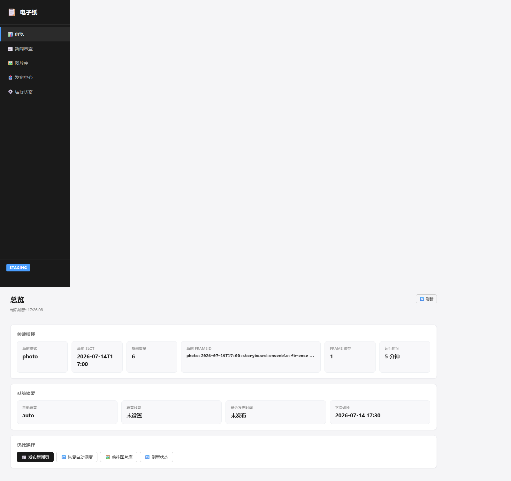
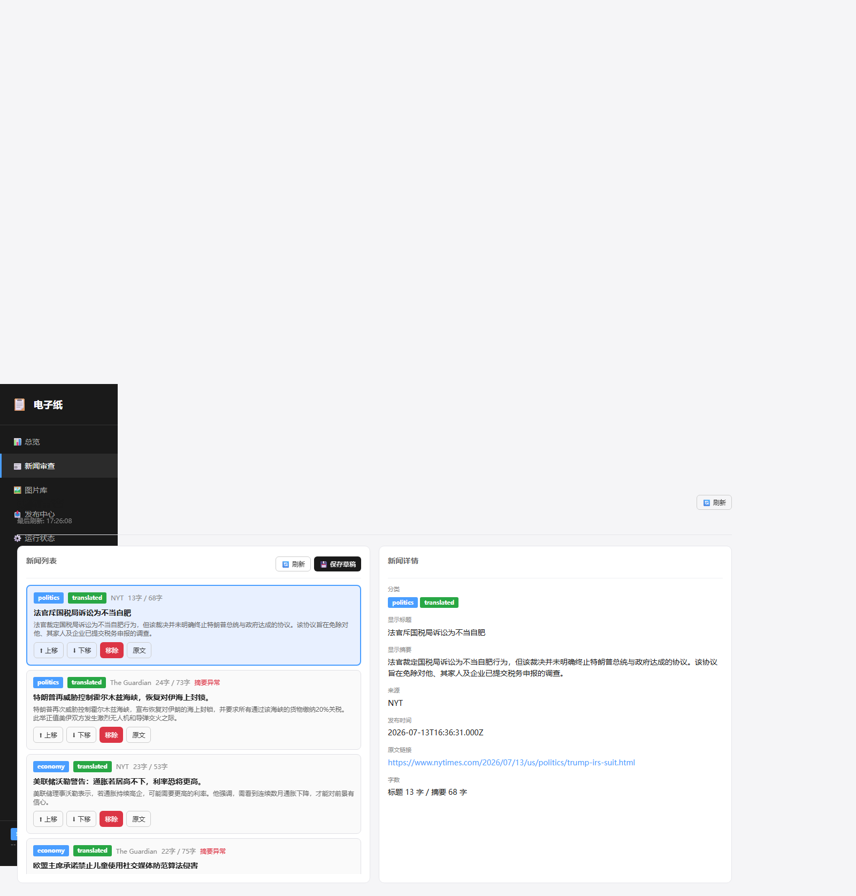
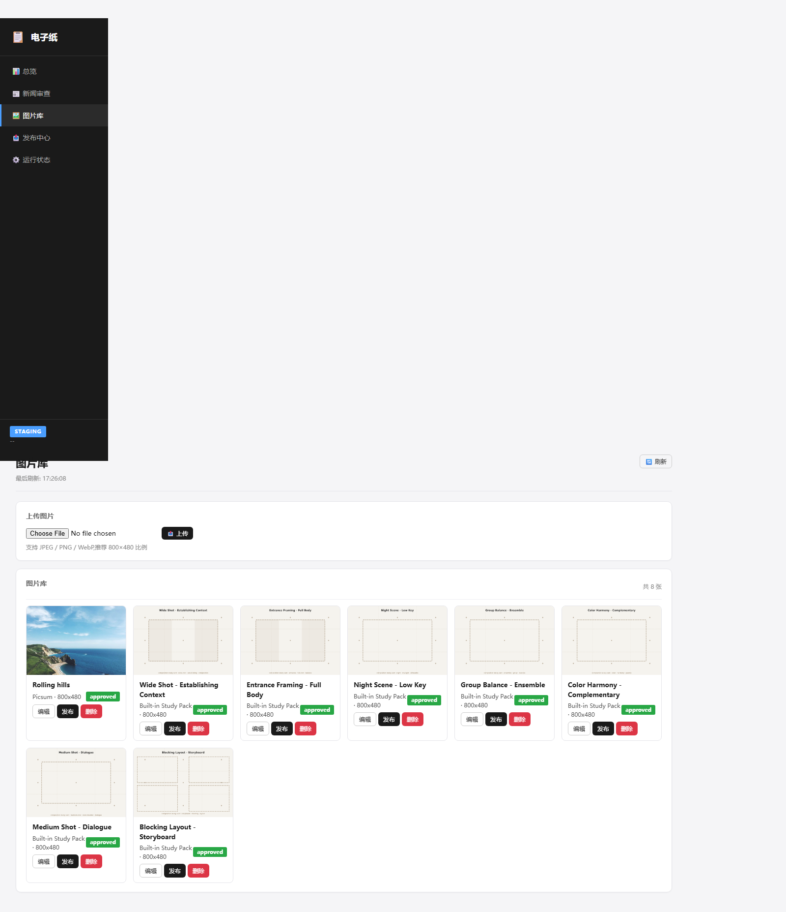
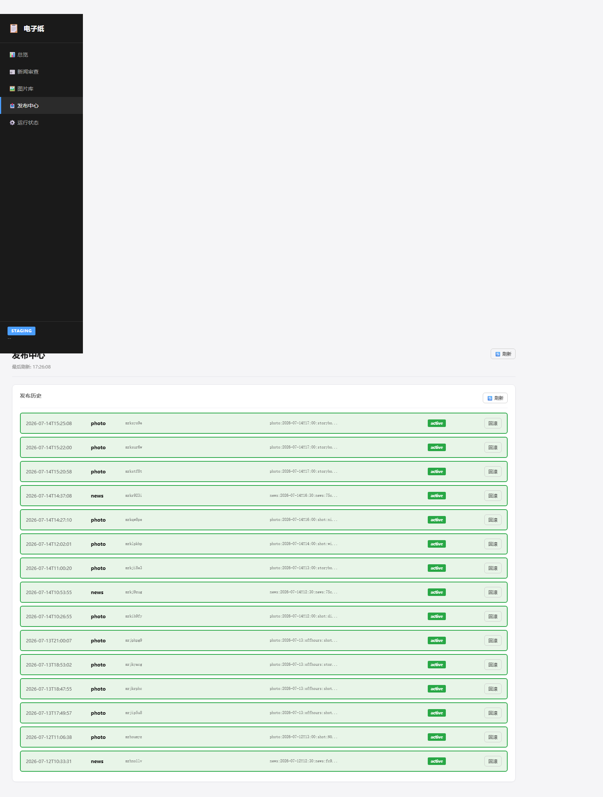
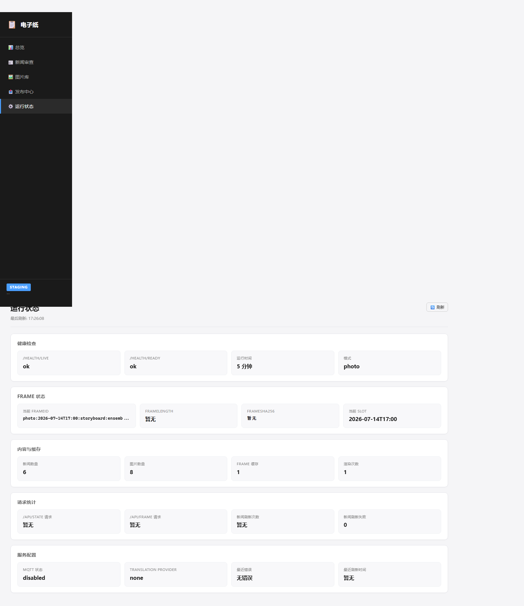

-- 占位符 — 替换为有意义的中文空态文本（"暂无数据"/"未设置"/"未生成"/"未调度"等）-/-- 为有意义的空态| ID | 标题 | 来源 | 移除原因 |
|---|---|---|---|
| hyatt-embarcadero | Hyatt Regency Embarcadero Atrium | 搜索 | 酒店内部图片，与新闻语境无关 |
| portrait-studio-rental | Portrait Studio Rental | 搜索 | 商业摄影工作室图片，非新闻内容 |
| kasberger-opening | Kasberger Opening | 搜索 | 无关活动图片 |
| feetgen-leafeon | Male/Femboy Leafeon AI Anime Feet Pics | 搜索 | AI 生成的不当内容 |
已清理 4 张不合格图片已从生产 image_index.json 中移除，当前保留 8 张有效图片。
| # | 标题 | 来源 | 分类 | 翻译状态 | 字数 |
|---|---|---|---|---|---|
| 1 | 法官斥国税局诉讼为不当自肥 | NYT | politics | translated | 13/68 |
| 2 | 特朗普再威胁控制霍尔木兹海峡，恢复对伊海上封锁。 | The Guardian | politics | translated | 24/73 |
| 3 | 美联储沃勒警告：通胀若居高不下，利率恐将更高。 | NYT | economy | translated | 23/53 |
| 4 | 欧盟主席承诺禁止儿童使用社交媒体防范算法侵害 | The Guardian | economy | translated | 22/75 |
| 5 | 中国机器人技术热潮下，被抛弃的蓝领工人 | 纽约时报中文网 | economy | original | 19/75 |
| 6 | 普京如何将日本变成俄罗斯间谍据点 | 纽约时报中文网 | technology | original | 16/75 |
| # | ID | 标题 | 来源 | 尺寸 | 安全状态 |
|---|---|---|---|---|---|
| 1 | d518a0fa... | Rolling hills | Picsum | 800×480 | approved |
| 2 | fb-wideshot | Wide Shot - Establishing Context | Built-in Study Pack | 800×480 | approved |
| 3 | fb-entrance | Entrance Framing - Full Body | Built-in Study Pack | 800×480 | approved |
| 4 | fb-night | Night Scene - Low Key | Built-in Study Pack | 800×480 | approved |
| 5 | fb-ensemble | Group Balance - Ensemble | Built-in Study Pack | 800×480 | approved |
| 6 | fb-color | Color Harmony - Complementary | Built-in Study Pack | 800×480 | approved |
| 7 | fb-dialogue-ms | Medium Shot - Dialogue | Built-in Study Pack | 800×480 | approved |
| 8 | fb-ensemble-sb | Blocking Layout - Storyboard | Built-in Study Pack | 800×480 | approved |





以下项目需要用户在实际页面中检查：
| 检查项 | 结果 |
|---|---|
| ADMIN_HTTP_200 | PASS |
| P0_NO_NULL_REFERENCE | PASS |
| APP_VISIBLE | PASS |
| SIDEBAR_NAV_LINKS (6) | PASS |
| DASHBOARD_MODE_LOADED | PASS |
| DASHBOARD_NO_DASH_PLACEHOLDERS | PASS |
| NEWS_ITEMS_PRESENT (6) | PASS |
| NEWS_DETAIL_LOADED_ON_SELECT | PASS |
| PHOTOS_PRESENT (8) | PASS |
| PHOTOS_NO_BROKEN_IMAGES | PASS |
| PUBLISH_HISTORY_PRESENT (13) | PASS |
| HEALTH_LIVE_LOADED (ok) | PASS |
| HEALTH_READY_LOADED (ok) | PASS |
| FLOW_NEWS_SELECTED | PASS |
| FLOW_DRAFT_SAVED | PASS |
| FLOW_PUBLISH_NEWS_CLICKED | PASS |
| FLOW_PUBLISH_FEEDBACK | PASS |
| CONSOLE_ERRORS_ZERO | PASS |
| PAGE_ERRORS_ZERO | PASS |
| REQUIRED_FAILED_REQUESTS_ZERO | PASS |
总计: 34 passed, 0 failed
ADMIN_READY_FOR_USER_VISUAL_REVIEW
Staging 18080 后台已重新设计并部署。所有 5 个页面均可正常打开，无控制台错误，无页面错误。新闻（6 条）、图片（8 张）、发布历史（13 条）均正常显示。后台操作流程（选择新闻 → 保存草稿 → 发布）验证通过。
用户可通过 http://192.168.1.49:18080/admin 访问后台进行视觉审查。